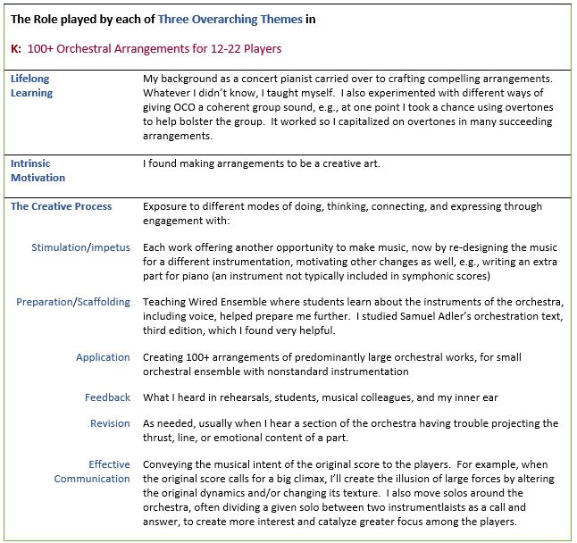

140+ Orchestral Arrangements for 10-22 Players
WHERE TO PUT THIS INFORMATION? It's not directly referenced in the
dossier. (Appendix IV-K-3)
[dd 10-28-24: keep it under the Music heading, but we can also include it under 'Music and Engineering' heading]
This document—organized by academic year—gives
orchestral arrangements that can be accessed at
The Engineers’
Conductorless Orchestra Hub, a website offering useful resources,
videos, orchestral arrangements, and blueprints to help/encourage other
engineering schools to start their own conductorless orchestras, as
discussed throughout this page.
Students in the Olin Conductorless Orchestra (OCO) select their own
repertoire. In general, they favor big romantic pieces typically played
by 70+ musicians (~50 strings and 24 wind/brass/percussion). But Olin
has a small student body which has resulted in nontraditional
instrumentation since OCO’s inception in Fall 2002. This means every piece must be
re-orchestrated to suit each semester’s available instruments. For
example, OCO winds and brass can outnumber the strings, and vice versa,
so balance has to be achieved through often unorthodox means.
My 140+ arrangements have enabled a small school like Olin to have an
orchestra, despite OCO’s eclectic instrumentation. They
can also help other engineering schools form their own
orchestras since these schools will likely lack a full complement of
standard instruments comprising their string, wind, and brass sections.
The arrangements are portable to other engineering schools via the
Engineers’ Conductorless Orchestra website Hub, an externally-facing
site with the mission of helping others outside the Olin community
actualize the conductorless orchestra model.
Explanatory notes for the OCO re-orchestrations (arrangements of
symphonic works). In creating these arrangements, I strive to make
OCO sound as full and varied as possible, with a wide dynamic range,
different colorations, strategic doublings, and effective solos/duets.
Yet constraints exist, e.g., the comfort ranges of the OCO musicians.
Simply substituting one instrument isn’t an option: given the eclectic
instrumentation of the last 22 years, a great group sound has to be
created by imaginative voice leading, unorthodox doubling (e.g., violins
with glockenspiel), timbral sleight-of-hand (e.g., blending a tenor sax
into an 18th century symphony), and other means.
Here is a short summary of my process for creating orchestral
arrangements for the Olin Conductorless Orchestra. (The specific
re-orchestrations mentioned below are elaborated further in this document).
- At the start of each semester I ask students for their
comfortable high and low forte notes and high/low
piano notes. These often dictate what I can and cannot do,
resulting in re-orchestrations particular to student
instrumentalists. This is one of the reasons why my arrangements
may be useful to other engineering schools wishing to start their
own conductorless orchestras.
- Instrumental, sectional (strings, winds, brass, percussion), and
orchestral voice leading. For example, taking a high passage
written for the violins and moving it down an octave, which often
necessitates moving other string and wind parts down an octave, then
bringing them back into their intended ranges in a smooth manner
with good voice leading.
- Stylistic intent of the composer. Having performed many Haydn,
Mozart, and Beethoven piano sonatas, as well as myriad romantic
works, I’ve assimilated a wide array of styles. For example, I
created an arrangement of Haydn’s Symphony No. 48 (first movement)
that evoked the classic style through an artful blend of three
clarinets, two flutes, and a tenor sax with strings, instead of
Haydn’s wind section of two oboes and a bassoon.
- Contrapuntal and harmonic practice of the composer, e.g., for a
piece in E minor, replacing the low B1 dominant of the double basses
with B2 (since we have no double basses), but approaching the B2 in
a stylistically smooth manner, as occurs multiple times in my
arrangement of the Dvorak Ninth.
- Nontraditional instrumentation, i.e., instruments typically not
found in an orchestra such as piano and saxophone (e.g., my
arrangement of the Berlioz “Marche Hongroise”), an over-abundance of
clarinets—or none at all—as can be heard in my arrangements of
Haydn’s Symphony No. 48 and Gershwin’s An American in Paris,
respectively. Frequently I’ll compensate an over-abundance of a
given instrument (such as flute) by combining each of the ‘too many
flutes’ with other instruments to create hybrid instruments that
hide the recognizable flute timbre (as I did with An American in
Paris). At other times, I’ll score the non-traditional instrument
(e.g., tenor sax) in a register where it will blend best with the
other instruments to create a coherent group sound (as with Haydn’s
Symphony No. 48).
- Non-standard ratios of violins, violas, and cellos. Strings
characteristically present a homogeneous section which helps when
there isn’t enough of a given instrument. But what happens when OCO
has six violins and only one cello (as occurred in Spring 2019)?
Depending on context, I doubled the cello with alto sax and/or
brass, and even with violins, as can be heard in the Berlioz “Marche
Hongroise.”
- Non-standard ratios of winds and brass. As an example, Mozart
wrote his Wind Serenade, K. 361, for 2 oboes, 2 clarinets, 2 basset
horns, 4 horns, 2 bassoons, and double bass. But during Spring
2019, OCO had none of these instruments; instead, we had 3 flutes,
an alto sax, trumpet, euphonium, and trombone. I created an
arrangement for these instruments, and wrote extra parts for our
pianist and timpanist so they could join the section.
- Untenable writing for too few instruments, e.g., the Dvorak
Eighth with only three violins to sustain stratospheric writing
intended for a full first violin section. As another example, in
his Ninth Symphony Dvorak wrote climactic passages that take the
first violin section—typically 16–18 players—ever higher. But in
Spring 2016, OCO only had six violins. Though some of the OCO
violinists could technically play these parts, the results would
have been thin and anticlimactic in comparison with the intended
large violin section of the orchestra which gave its 1893 world première
(Philharmonic Society of New York). So to achieve these climactic
passages, I scored the stratospheric lines for both glockenspiel and
piano (right hand in octaves), doubled at the octave below by all
six violins so that their overtones would support the glockenspiel
(a high bell-like instrument) and piano.
- Giving students solos, as can be heard in all the OCO YouTube
recordings. For example, in An American in Paris, I often
re-distributed solos, originally written for one instrument, among
several players. I frequently give the recapitulation of a solo to
another member of the orchestra, or re-allocate who gets the top
line, e.g., flute1 and flute2 customarily play the higher and lower
flute parts, respectively, but I often switch them to provide more
variety for the players, as can be heard in all my arrangements for
OCO.
- Reduction from 90+ player orchestrations to 10-22 player
arrangements (e.g., the 24 wind/brass instruments required for
An American in Paris vs. the eight available in OCO ), or
an increase in forces, as from a wind ensemble to a mixed
wind/brass/percussion/piano ensemble (e.g., Mozart’s Serenade in
Bb for Winds, K. 361).
- Balance issues, i.e., non-standard numbers of wind, brass, and
strings comprising their respective sections, as have occurred and
been addressed in all my arrangements, e.g., An American in
Paris and Danzon No. 2 by Arturo Marquez, to name but
two.
- Creating the impression of large forces through changes in
dynamics, color contrasts, decreasing/increasing texture, among
other strategies. OCO typically likes ‘big’ works, such as
Danzon No. 2, the Dvorak Ninth Symphony, and
An American in Paris, among others.
- I try to give each student a good part that speaks to
his/her/their strengths, while also challenging weaker aspects of an
individual’s playing (provided the student shows a commitment to
mastering an earlier part). I also try to give each at least one
challenging part so they can ‘rise to the occasion’, hopefully
paving the way for additional challenging parts. When material is
repeated, I’ll often vary the orchestration with each repetition
(e.g., the Berlioz “Marche Hongroise”) or when duets/trios allow, I
switch players in and out, thereby distributing parts (e.g.,
Gershwin’s American in Paris at rehearsal 67).
- And finally, something I always try to do: everyone plays at
the end of a piece—at least one note!
This document examines eight of my orchestral
arrangements, showing how I created stylistic consistency and a coherent
group sound for OCO despite eclectic instrumentation and unbalanced
wind, brass, and string sections. Scores of these orchestral
arrangements can be found in this document.
In sum, by creating orchestral arrangements for the Olin
Conductorless Orchestra, I sought to not only establish its viability but also support goals of developing students, providing external impact, and
building & sustaining the College (Map 1). These arrangements enabled
our students and community to have an orchestra for the past 22
years—despite an eclectic array of instruments—an orchestra
that has helped students grow, both as players and listeners; an
orchestra that has had a positive impact on prospective students, their
families, and wider communities outside Olin; an orchestra that by
virtue of its being conductorless has contributed to Olin’s reputation
for innovation in engineering education. Thus, though this project lies in
the music space, it also inhabits the engineering space (Map 2). The
table below captures the role played by each of my three overarching
themes in producing these arrangements, thus elaborating upon Map 3.
